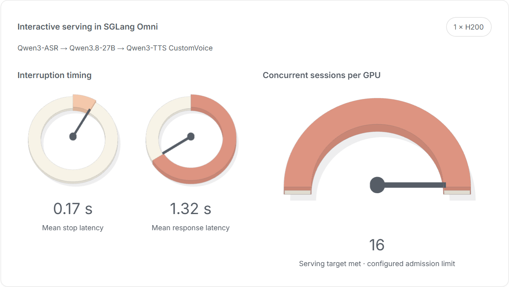
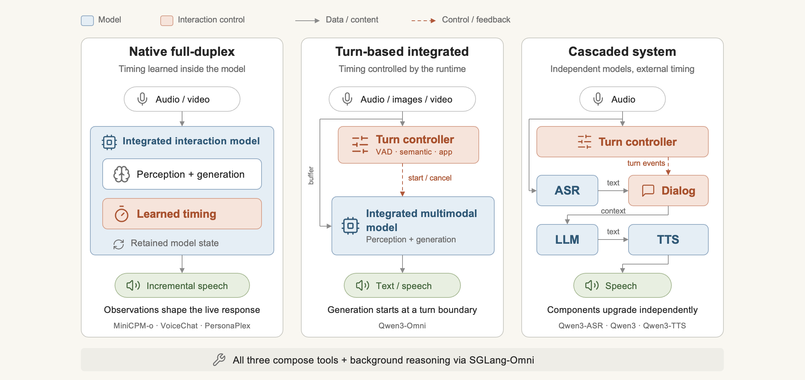
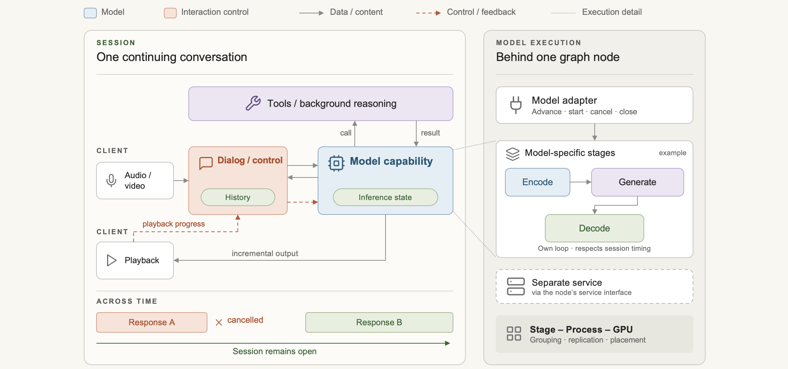
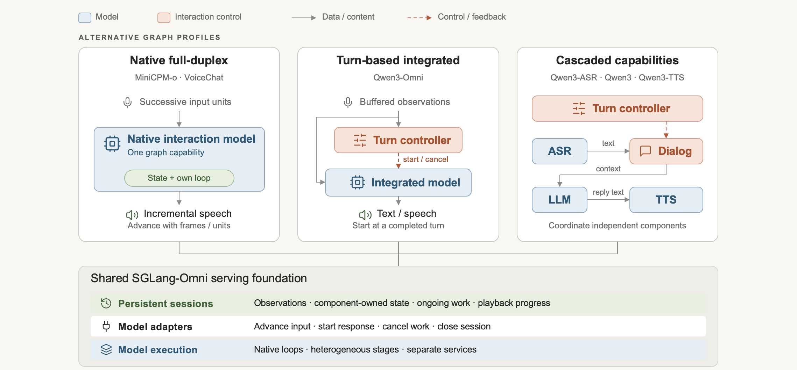
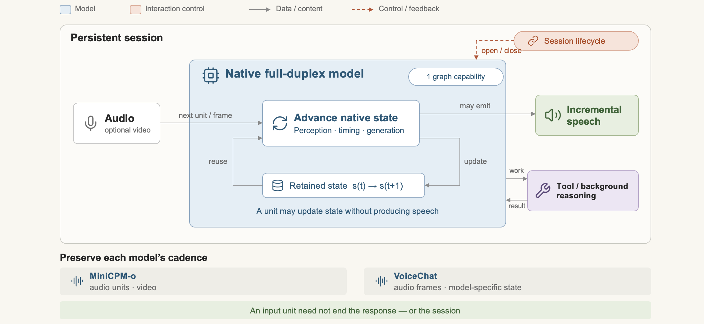
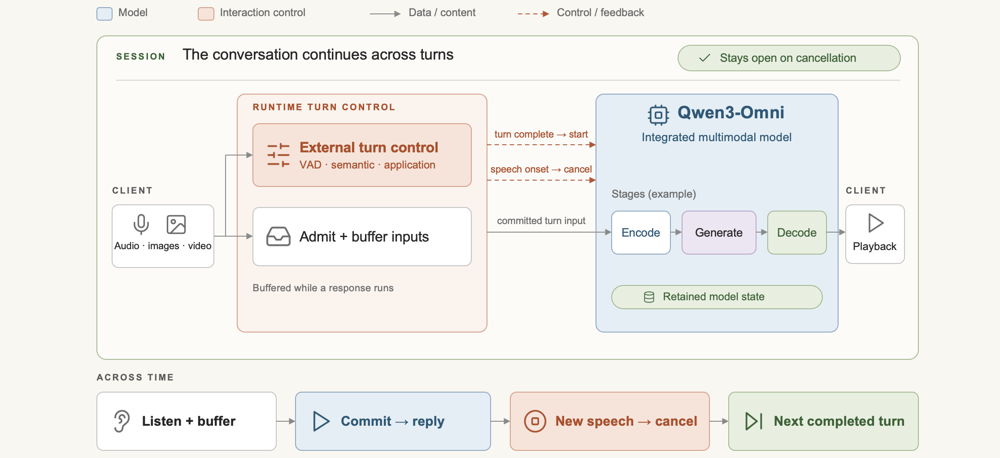
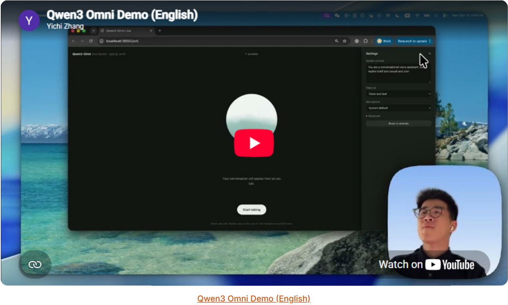
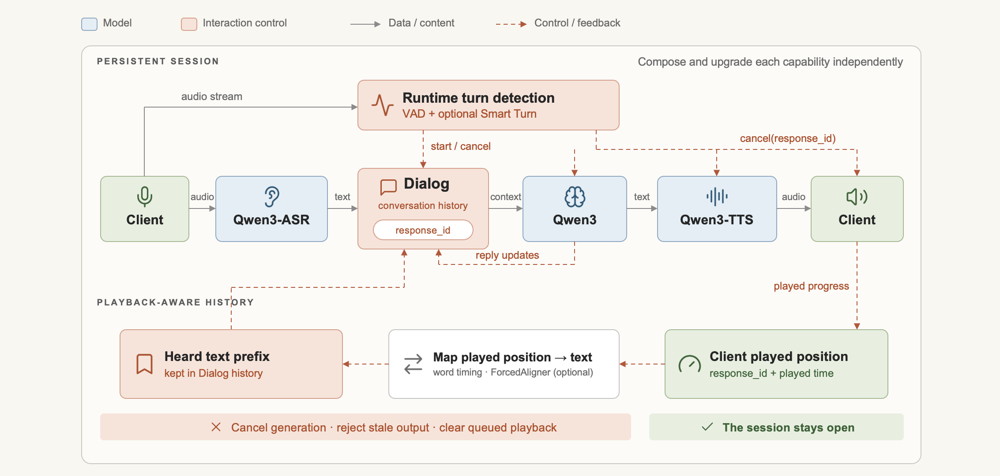
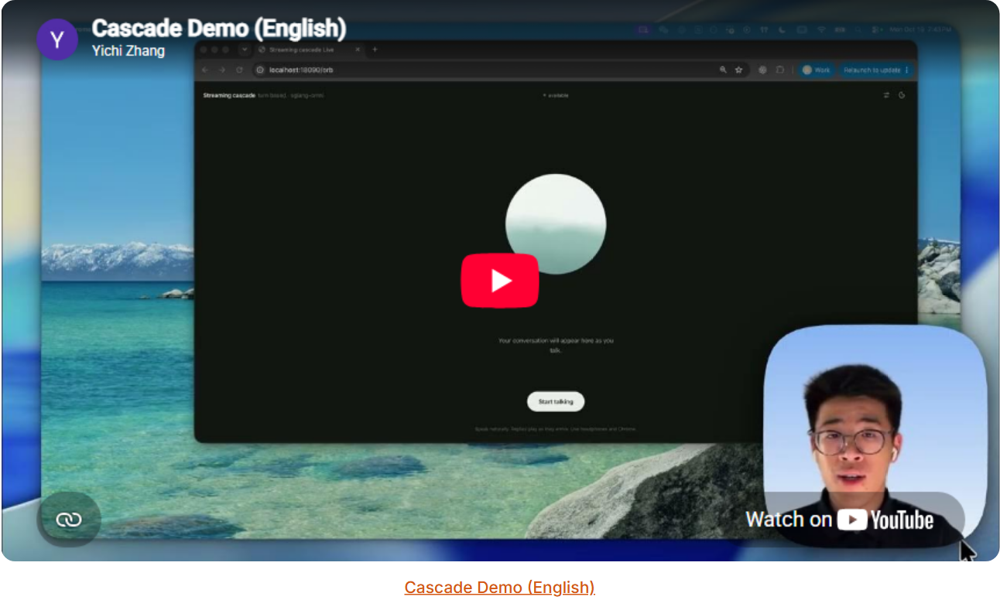

持续的多模式交互需要在对话的整个生命周期中协调感知、生成和持续工作。

TL;DR
持续的多模式交互需要在对话的整个生命周期中协调感知、生成和持续工作。我们通过适用于原生全双工模型、基于回合的多模式模型和级联系统的统一运行时来扩展 SGLang-Omni。图组成模型功能和交互控制，而持久会话则在连续的输入和响应中协调其生命周期和事件。通用的实时界面可以对交互行为、服务能力和语音质量进行一致的评估。实验揭示了这些架构之间的不同权衡，并演示了如何在同一服务和交互框架内评估各个组件的升级。
引言
人工智能系统可以回答困难的问题并执行复杂的任务，但与它们的协作通常仍然意味着轮流：用户提供上下文，等待响应，然后解释发生了什么变化。在这一反应期间，世界并没有暂停。一个人可能会澄清一个意图，一个物体可能会移动，或者一个行动可能会使原来的计划变得过时。持续交互需要人工智能系统在响应和行动时感知这些变化，并根据情况的发展修正其行为。语音、视频和工具结果成为不断发展的共享环境的一部分，而决定何时说话、等待或采取行动则成为任务本身的一部分。服务挑战是在整个交互过程中协调感知、生成和正在进行的工作，超越任何单个生成请求的生命周期。
OpenAI、Google、Thinking Machines、Boson AI、ByteDance 和 OpenMOSS 正在通过构成独立功能的端到端模型和系统来追求持续交互。一个中心设计问题仍然悬而未决：模型应该学习多少交互行为，以及周围系统应该协调多少？探索这个问题需要的不仅仅是独立服务每个模型。研究人员需要改变模型、工具和交互策略协同工作的方式，而无需为每个设计重建服务基础设施。 SGLang-Omni 旨在为实验和部署提供通用基础。
SGLang-Omni 是模型执行之上的调度和编排层，如 SGLang-Omni 设计讨论 和 阶段-进程-GPU 拓扑 所描述的。 Omni 已经将异构计算的协调与特定于模型的执行分开：它的阶段组织模型内的依赖关系、通信和资源放置。我们在此基础上构建模型架构之上的图形抽象，组合模型、工具和交互控制，同时保留每个模型的内部执行结构。会话在持续的交互中协调它们的生命周期和事件。
构建交互式系统的方法

交互式系统可以沿着三个实用路径构建。原生全双工交互模型学习对话时间以及感知和生成。基于回合的交互模型集成了多模式理解和生成，同时将回合控制留给运行时。级联交互系统在外部交互策略下组成独立选择的模型。这些选择决定了交互质量、培训和集成工作、服务成本以及采用新模型的能力。
| 原生全双工模型 | 回合制模型 | 级联交互系统 | |
|---|---|---|---|
| 模型构成 | 端到端模型集成了感知和生成。 | 端到端模型集成了感知和生成。 | 单独的模型提供感知、推理和生成。 |
| 交互控制 | 当输入继续时，模型决定何时监听或响应。 | 外部控制器确定转弯边界并启动或中断响应。 | 外部控制器协调组件之间的轮流和中断。 |
| 执行模式 | 连续的输入单元推进持久模型状态。 | 每个完成的用户回合都会触发持续会话中的响应生成。 | 组件传输中间结果并以不同的速率前进。 |
| 运行时责任 | 保留模型状态并维持连续的输入和输出。 | 将轮次决策与输入缓冲、生成和取消连接起来。 | 协调数据流、组件状态、取消和输出交付。 |
| 适配与升级 | 能力的变化遵循模型的架构和训练。 | 转向策略可以独立于底层模型而发展。 | 各个模型和交互策略可以独立升级。 |
原生全双工交互模型
原生全双工模型学习何时听、说和屈服以及感知和响应生成。它们的状态随着连续的输入而进步，允许新的观察在产生答案时塑造答案的内容和时间。 MiniCPM-o、Nemotron VoiceChat 和 PersonaPlex 说明了这种方法：情绪、强调和节奏等声学线索可以告诉模型所说的内容以及说话的方式。 VoiceChat 和 PersonaPlex 专注于音频交互，而 MiniCPM-o 还将视频纳入其全双工循环中。
尽管有这些优势，但相对于领先的封闭系统，开放式原生全双工模型仍有待完善。自然的轮流和强大的任务解决能力必须共同提高，需要大量的联合训练和交互数据。现有的检查点消除了应用程序开发人员的培训负担，但仍需要部署它以实现连续操作。即使在口头回复之间，输入处理和保留的模型状态也会消耗资源，因此服务成本取决于保持整个会话的响应能力。
一起学习感知、生成和对话时间可以让它们共同优化，同时也可以耦合它们的升级。更强大的语言主干必须适应模型的其余部分。异步后台推理提供了一条补充路径：交互模型维持对话，而另一个模型处理更深层次的工作。因此，原生轮流仍然与组合和独立升级其他功能兼容。
回合制交互模型
基于回合的交互模型提供了原生全双工模型和级联系统之间的中间立场，将集成的多模态感知和语音生成与外部可配置的交互控制相结合。例如，Qwen3-Omni 接受音频、图像和视频并生成文本和语音。直接访问音频可以保留转录可能省略的语气和强调等线索，而集成语音生成则支持表达性响应。外部控制器使用语音活动检测 (VAD)、语义转向检测或显式应用信号来确定何时开始响应或中断响应。
主要的集成挑战是将外部控制连接到内部模型状态。转弯检测必须及时响应，不能将犹豫误认为是完整的想法。中断后，模型的上下文必须与实际播放的内容保持一致。响应生成在完成轮次之后，而监听、缓冲和保留的上下文继续消耗资源。控制器可以在发电启动或停止时改变；它不会使基于回合的模型在生成时不断感知新的输入。
现有的检查点使开发人员无需训练模型即可构建应用程序。然而，将新的视觉语言模型（VLM）转变为端到端的语音交互模型仍然需要大量的适应和会话后训练。转向策略可以独立改变，而感知、推理和语音生成保持更紧密的耦合。更有效的适应将使广泛开放的 VLM 生态系统更容易引入交互式应用程序。
级联交互系统
级联交互系统利用每个组件的强大开放模型，在外部交互策略下组合它们。语音管道可以结合 Qwen3-ASR、Qwen3 语言模型 和 Qwen3-TTS，利用更广泛的 LLM 生态系统进行推理和工具使用。视觉输入可以通过多模态语言模型或单独的感知组件输入。 Qwen3-ForcedAligner 等对齐模型将合成语音映射到文本时间戳。结合客户端播放反馈，运行时可以确定哪些文本对应于已播放的音频，并相应地更新对话历史记录。
强大的单个组件不会自动产生连贯的相互作用。文本中间体可以丢弃情感和其他声音线索，而单独合成的块可能在语气和节奏上有所不同。识别、生成和播放以不同的速率进行，需要协调上下文、取消和进度跟踪。多个服务增加了通信、缓冲和操作开销，但也允许资源单独扩展。它们的综合成本取决于工作负载和部署，而不仅仅是模型的数量。
独立升级是一个主要优势：可以集成新的 ASR、语言、合成或对齐模型，而无需联合重新训练管道。界面适配和调整仍然很重要，因为分块或延迟的变化可能会改变整体体验。 Pipecat 和 LiveKit 等框架提供了用于组合这些服务的集成和部署工具。该生态系统允许团队重用模型功能和应用程序基础设施，同时保留对组件选择和交互策略的控制。
保持交互设计的开放性
每种方法都将最困难的工作放在不同的地方：联合模型训练、外部控制和模型状态之间的协调或跨独立组件的编排。这决定了用户获得的体验、构建体验所需的努力、运行成本以及改进的速度。
这些方法并未集中在交互式系统的单一设计上，并且每种方法仍然是研究和开发的活跃方向。 SGLang-Omni 支持这三者，以便研究人员和开发人员可以探索他们的权衡，而无需为每个设计重建服务基础设施。相同的基础也使得组合成为可能：原生交互模型可以调用单独的推理模型，而级联可以采用新的语音组件而不替换其语言模型。保持这些选择的开放性可以让模型和交互策略的进步塑造系统，而运行时则保留每个模型的执行要求和对话的连续性。
架构：图、会话和模型执行

我们的设计灵感来自于Omni-Flow基于图的异构计算编排。 SGLang-Omni 已经使用阶段来组织模型内的编码器、语言模型、扩散模型和音频解码器，包括它们的依赖性、通信和资源放置。我们的图形抽象在模型架构之上添加了编排：它在持续的会话中连接模型功能、工具和交互控制。
该设计区分了三个问题：哪些功能进行协作、哪些状态属于对话以及哪些计算已准备好执行。图描述第一个，会话建立第二个，阶段将两者连接到模型执行。应用程序框架可以继续处理围绕该服务层的媒体传输和业务工作流程。
交互式系统的通用图抽象
节点代表参与交互的能力。原生全双工模型可以占用一个节点，保留其学习到的感知、生成和会话时序。基于回合的模型连接到外部回合控制。级联将识别、对话控制、语言生成和合成作为单独的节点公开，因为这些功能可以独立选择和升级。图形节点可以连接到通过 Omni 阶段组织的模型执行或调用独立部署的服务。这将交互中的功能协作方式与跨进程和 GPU 的计算方式分开。
边缘在节点之间传输数据和控制。回合检测器可以发出话语准备就绪的信号，同时保持识别和合成不变。原生交互模型可以将工作委托给推理模型或工具并继续其对话，直到结果到达。该图表达了这些依赖关系，以便组件可以独立前进并在准备好时交换结果。
这些连接描述了工作的流程。为了将上下文从一个输入或响应传递到下一个输入或响应，运行时还需要一个持久会话。
用于持续交互的持久会话抽象
会话持续对话，涵盖各个模型调用和响应。它将传入的观察、保留的状态和正在进行的工作与相同的交互相关联。完成回复不会关闭会话，取消一项工作也不需要放弃下一项工作所需的上下文。
每个组件都拥有它所理解的状态：模型维护其推理状态，而对话组件则维护对话历史记录。会话协调它们的生命周期和事件。这允许组件完成或取消工作，同时对话的其他部分继续。
连续输入也给计算带来了节奏。单元是一个增量步骤，可以推进模型的状态并可能产生输出；其大小和时间取决于模型。当一个单位等待资源或批次时，外部世界不断移动。调度必须考虑何时需要其结果，平衡批处理和重叠的效率与它们引入的延迟。
持续交互的可组合基础
SGLang-Omni 为持续交互提供了可组合的基础。图连接模型能力、工具和交互控制；会话在连续的输入和响应之间协调其生命周期；阶段组织每个模型内的计算。这种分离支持一个服务框架内的原生全双工、回合制、级联和混合设计，同时保持交互设计与进程和 GPU 布局的分离。开发人员可以替换语音组件、升级级联的语言模型，或者在重用周围会话基础设施的同时尝试轮流策略。
该图还使反馈变得明确：播放和对齐进度通知对话历史记录，而取消则使跨生成、路由和播放的陈旧工作无效。通过通用的实时界面，每种配置都可以重用相同的客户端记录和评分管道，从而减少探索新架构、评估组件升级以及将成功的设计进行部署所需的工作量。
从抽象到工作系统

原生全双工交互模型：保留模型自己的循环

MiniCPM-o 在开放会话中接收连续的音频单元，其视听模式中包含视觉输入。每个单元都会提高感知和模型的保留状态；然后，模型决定是继续监听还是产生响应。适配器增量返回文本和音频，下一个单元从相同的会话状态继续。 Omni 提供输入并安排执行，同时模型保留对其对话行为的控制。
观看原始演示视频 MiniCPM-o 演示（英文）
VoiceChat 使用基于框架的界面。在会话中，传入的音频帧将模型的保留状态和生成的音频流推进回客户端。其适配器在将帧序列和执行节奏连接到公共服务接口时保留它们。
回合制交互模型：外部回合控制

使用 Qwen3-Omni，音频和相关的摄像机帧会在会话中累积，直到外部转弯检测完成语音为止。运行时提交该输入以进行多模式处理和响应生成，然后将生成的文本和语音流式传输到客户端。当响应完成时，会话继续下一个等待的话语及其对话上下文。
如果用户在回复期间开始说话，回合控制器就会发出中断信号。运行时取消主动响应，但保持会话打开以收集新的话语。然后，下一个响应可以使用该输入和保留的对话上下文。

观看原始演示视频 Qwen3 Omni 演示（英文）
级联交互系统：协调独立能力

Qwen3-ASR → Qwen3 → Qwen3-TTS 配置文件在一个会话中连接识别、语言生成和合成。 ASR 转录用户的语音；一旦回合准备就绪，Dialog 会将其添加到对话历史记录中，并将生成的上下文发送给 LLM。 LLM 将文本流式传输到 TTS，TTS 将音频返回给客户端。当其输入可用时，每个组件都会前进，而会话将它们的工作与相同的对话和回复相关联。
控制和进度通过同一会话回流。如果用户通过回复讲话，Dialog 会中断生成，并且图形会拒绝中断回合的输出。客户端播放反馈标识播放了多少音频；对齐方式将该位置映射到历史记录的文本前缀。如果没有更精细的对齐，剪辑就会落在报告的播放位置内的最后一个完整句子处。单独生成或发送音频并不能确定音频已被播放。
智能转弯 显示图如何适应不同的转弯策略。 VAD 识别言语和沉默；语义转向检测判断停顿是否完成了话语。两者都提供会话其余部分可以使用的事件，因此更改检测器不需要更改 ASR、LLM 或 TTS 执行。

观看原始演示视频 级联演示（英文）
评估结果
图抽象统一了全双工系统的实现方式：原生全双工模型、基于回合的模型和级联都在同一会话接口后面作为图运行。这样就可以在图上方定义一次评估。任何公开此接口的图都可以使用相同的对话和评分管道进行评估，无论其节点如何组成，这种灵活性是构建可扩展系统的关键：新的模型、组件或交互策略一旦组装成图就可以进行测量。 SGLang-Omni 基准测试通过 /v1/realtime 实时重播用户音频，并测量客户端观察到的事件、计时和音频。它不需要服务器端仪器，因此相同的评估可以应用于实现该协议的其他服务器。
一起衡量行为、服务和监听
该基准报告了三个维度。交互行为通过 Full-Duplex-Bench 进行测量。它的 v1.5 集在四种情况下将第二个语音与系统回复重叠：用户中断、用户反向通道、用户与其他人交谈以及背景语音播放。系统应该在第一种情况下屈服并做出响应，并在其他三种情况下保持对话。法学硕士评审模型会标记系统执行了这两个操作中的哪一个，以及是否适当地处理了重叠，以及计时产生的停止和响应延迟。 v1.0 集涵盖了用户回合内的暂停、回合结束和中断，根据系统相对于这些边界开始或停止说话的时间进行评分。
服务是通过扫描并发会话数并在客户端检查每个系统是否保持实时状态来衡量的。原生模型必须按时处理其输入单元：在输入到达后完成超过一秒的单元被视为延迟，最多 1% 可能会延迟。回合制或级联系统生成回复音频的速度必须快于播放速度，90% 的实时系数低于 1。在每个级别，任何会话都不能失败。系统的容量是在一个 GPU 上满足这些目标的最高并发量。
监听质量会在客户播放每个回复时对每个回复进行评分，直到插入中断为止。遗漏率计算 ASR 模型在音频中没有听到的已完成回复文本中的单词，从而暴露已生成但从未说出的文本。 UTMOS 预测感知的自然度。语音一致性将每个回复的说话者嵌入与系统其他回复的说话者嵌入进行比较，因此从一个回复漂移到下一个回复的语音得分较低。两个音频分数都使用至少三秒的回复，并且语音一致性与相等的三秒窗口进行比较，因为扬声器嵌入随着剪辑持续时间而变化。
结果
我们评估了 MiniCPM-o 4.5 作为原生全双工模型，具有 VAD 转弯检测的 Qwen3-Omni 作为基于转弯的模型，以及 Qwen3-ASR-1.7B、禁用思维的 Qwen3.8-27B 和 Qwen3-TTS CustomVoice 的级联，也具有 VAD 转弯检测。为了展示语言模型为该系统带来的智能和交互质量，我们还进行了一项消融，用 Qwen3-4B-Instruct 替换 Qwen3.8-27B，并保持其他所有内容不变。所有系统均由相同的 SGLang-Omni 版本提供服务，每个版本均在一台 H200 上，并记录在相同的样本上：每个 Full-Duplex-Bench v1.5 类别 25 对，每个 v1.0 子集 10 个样本，一次一个会话。每个服务级别运行 128 个会话。
| 方面 | 公制 | MiniCPM-o（原生全双工） | Qwen3-Omni（回合制） | 级联（Qwen3.8-27B） | Cascade、Qwen3-4B（消融） |
|---|---|---|---|---|---|
| 行为 | 当用户中断时响应 ↑ | 56% | 96% | 72% | 96% |
| 通过秘密渠道继续交谈 ↑ | 96% | 56% | 76% | 56% | |
| 当用户称呼其他人时继续说话 ↑ | 64% | 0% | 24% | 0% | |
| 通过背景演讲继续说话 ↑ | 84% | 0% | 12% | 0% | |
| 适当处理重叠（LLM评审模型）↑ | 85.6% | 51.0% | 54.2% | 53.1% | |
| 有依据气的回复（法学硕士评审模型）↑ | 66.3% | 60.7% | 87.2% | 71.9% | |
| 停止/响应延迟 ↓ | 1.61 / 2.59 秒 | 0.25 / 1.13 秒 | 0.17 / 1.32 秒 | 0.20 / 1.06 秒 | |
| 说话停顿、合成/自然语音 ↓ | 30% / 40% | 10% / 10% | 10% / 40% | 10% / 60% | |
| 2秒内转弯↑ | 80% | 100% | 90% | 90% | |
| 服务 | 每个 GPU 的并发会话数达到目标 ↑ | 8 | 2 | 16¹ | 16¹ |
| 听力 | 遗漏率↓ | 6.0% | 6.1%² | 0.4% | 0.6% |
| 乌特莫斯↑ | 4.17 | 4.47 | 4.24 | 4.20 | |
| 语音一致性↑ | 76.2 | 83.6 | 67.9 | 67.3 |
1 级联配置的准入限制。在 16 个会话中，Qwen3-4B 的 90% 实时系数为 0.85，Qwen3.8-27B 的 90% 实时系数为 0.80，因此 GPU 还不是瓶颈。
² 8 个超过 5 分钟的回复在 327.7 秒时停止说话，同时继续文字；如果没有它们，比例为 0.8%。
行为率来自每个 v1.5 类别 25 个样本和每个 v1.0 子集 10 个样本；分别小于约 20 点和 30 点的差异在采样噪声范围内。
没有一种方法占主导地位。基于回合的模型和级联会在中断后四分之一秒内停止，但两者也会将不适合它们的语音视为新的回合：当用户转向其他人或播放背景语音时，Qwen3-Omni 不会继续说话，而级联仅在大约四分之一和八分之一的情况下继续说话。这是已知问题中描述的粗略中断策略，现已测量；无论谁在讲话或为什么讲话，讲话的开始都会结束答复。 MiniCPM-o 本身就具有这种区别，它会继续进行大多数旁白和背景演讲，但它只对大约一半的真正中断做出响应，并且平均需要 1.6 秒才能停止。评审模型对重叠处理的评价是三者中最高的，但其时间安排是最慢的。
听力分数区分了每种设计在语音中的收获和损失。级联说出其文本所说的内容，遗漏率最低，但语音一致性最低：即使使用固定的说话人，作为独立请求合成的句子也会在韵律中漂移，这是已知问题下指出的连续性问题。 Qwen3-Omni 的集成语音生成在自然度和一致性方面得分最高。 MiniCPM-o 的回复文本中约有 6% 未被提及。
消融显示了语言模型的贡献。用 Qwen3-4B 替换 Qwen3.8-27B 可以将评审模型认为有依据的回复比例从 87% 降低到 72%，并将响应延迟缩短约 0.26 秒。围绕重叠语音的行为变化要小得多，因为决定级联何时轮流的是语音活动检测，而不是语言模型；其余差异，例如 Qwen3.8-27B 对中断的响应为 72%，Qwen3-4B 对中断的响应为 96%，接近每个类别 25 个样本的采样噪声。两个版本都在一个 GPU 上支持 16 个会话，在该负载下，Qwen3.8-27B 的首段音频时间的 P90为 1.3 秒，Qwen3-4B 为 0.3 秒。
容量反映了每个设计花费计算的地方。该级联在一个 GPU 上运行其三个模型，并在 GPU 饱和之前达到其准入限制。 MiniCPM-o 连续处理每个会话的输入，包括在监听时，并跟上八个并发会话。单 GPU Qwen3-Omni 布局将其所有阶段放置在一台设备上，并支持两台设备。这些数字衡量的是当前的服务配置，而不是方法的限制，并且随着调度的改进，相同的基准将跟踪它们。
重现评估
记录器、Full-Duplex-Bench 评分管道、服务扩展测试和监听指标是基准/双工下 SGLang-Omni 存储库的一部分。上述运行的录音、每次回复音频、分数和日志均发布在 Hugging Face 数据集 gavinlaw/sglang-omni-fdb-native-runs 中。由于评分仅读取记录的会话，因此可以将新指标或评分更改应用于这些记录，而无需再次为模型提供服务。
用法
按照安装指南准备运行时并安装所选模型所需的依赖项。从该环境中的存储库根运行示例：
git clone git@github.com:sgl-project/sglang-omni.git && cd sglang-omni
uv pip install --prerelease=allow -e .
选择交互模式和可用硬件的配置。下面的示例公开了 /v1/realtime；浏览器游乐场处理连续输入、流式输出以及每个模型支持的控件。
原生全双工交互模型
在开始其原生全双工配置之前，安装 MiniCPM-o 依赖项，包括 ONNX。然后在第二个终端启动游乐场。打开 http://localhost:8080 以使用麦克风和摄像头（可选）：
python -m sglang_omni.cli serve \
--config examples/full_duplex/minicpmo.yaml \
--model-path openbmb/MiniCPM-o-4_5 \
--enable-realtime --port 8000
python playground/realtime/app.py \
--api-base http://127.0.0.1:8000 --port 8080
VoiceChat 工具使用 example/nemotron_voicechat/tool.yaml。设置检查点并注册向模型公开的函数，然后使用 --enable-realtime 启动。在对话过程中保持音频输入流畅，包括等待回复时保持沉默。模型说明书提供检查点准备和特定于模型的控制。
回合制交互模型
Qwen3-Omni 的会话配置文件将集成多模式生成与外部回合控制相结合。提供的布局假定为专用 H200；使舞台布局和内存部分适应其他硬件。回合制游乐场会在回复中断时报告播放位置，因此下一回合仅保留听者听到的内容；相机输入可通过实时游乐场获得，但尚未报告播放位置：
sgl-omni serve \
--config examples/qwen3_omni/session_h200.yaml \
--enable-realtime --port 8000
python playground/cascade/app.py \
--api-base http://127.0.0.1:8000 --port 8090
要迁移请求-响应客户端，请保留应用程序的指令并用持久的实时连接替换单独的音频上传。使用服务器回合检测或显式提交每个输入回合。当取消回复时，客户端应停止排队播放，并在截断对话历史记录时报告播放位置。
级联交互系统
qwen3-asr-qwen3-tts-base-clone 配置文件将 Qwen3-ASR、Qwen3-4B 和 Qwen3-TTS 与参考语音和 Smart Turn 结合在一起。它使用单独的对齐工作器将播放进度映射到回复文本。按照运行时参考中的描述准备该工作线程的环境，然后从存储库根目录的该环境启动该工作线程。一旦工作人员准备就绪，就可以使用主 Omni 环境在另外两个终端中启动服务和 Playground：
PYTHONPATH=. python examples/streaming_cascade/alignment_worker.py \
--model Qwen/Qwen3-ForcedAligner-0.6B --device cuda:0 --language English --port 8010
sgl-omni serve \
--config examples/streaming_cascade/profiles/qwen3-asr-qwen3-tts-base-clone/launch.yaml \
--enable-realtime --port 8765
python playground/cascade/app.py \
--api-base http://127.0.0.1:8765 --port 8090
运行时参考 记录了工作线程环境和可用配置文件。配置文件可以启动其模型服务或连接到已在其他地方运行的服务。要重用现有部署，请删除相应的服务条目并将节点的 base_url 指向该端点。
迁移现有级联时，首先保留模型和业务逻辑。通过会话将它们连接起来，然后集成响应取消和客户端播放反馈。识别、语言生成、合成和转向策略随后可以独立更改，使每个更改更容易评估。
已知问题和进一步方向
当前的两个限制涉及系统如何解释重叠的语音以及它提供口头答复的一致性。
解释中断
在这里描述的基于回合和级联的配置中，新的语音可以停止主动回复，即使它只是一个简短的确认，例如“mm-hm”。区分确认和发言尝试需要比检测用户回合结束更丰富的交互决策。
语音连续性
句子级合成使文本可以轻松地流式传输到 TTS，但即使使用固定的语音，韵律和节奏也可能会跨越边界。
这些挑战指出了需要进一步开展工作的三个领域。
围绕交互时序进行调度
输入节奏、排队工作和播放余量可以帮助确定何时进行批处理、重叠阶段或限制播放前的生成。目标是提高利用率，同时保持每次对话的及时进展。
协调交互与深层任务
当另一个模型或工具异步工作时，原生模型或级联可以保持交换继续进行。当用户在工作完成之前改变方向时，需要明确的交接和结果交付规则。
在长会话中保持连贯性
文本历史记录、视觉观察、声音缓存和生成的输出具有不同的保留需求。窗口和恢复应该考虑到它们之间的关系，以便释放内存不会使组件的会话视图不一致。
致谢
在过去的两个月里，我们将 SGLang-Omni 构建为交互式智能的统一运行时。这项工作是通过以下贡献者的奉献、想法和协作而得以实现的。
SGLang-Omni 团队： 李军男、陈宇豪、高文耀、罗嘉轩、曲金涛、何若宇、周雨涵、谷静文、王理查德、张一驰、沉慧、李继森、曲金涛、何若宇、孙傲、田旭翔、高阳、周华鹏、李世东、赵晨阳
工程附录
下面的详细信息解释了运行时行为背后的几种实现选择。
保持模型时间和播放时间同步
原生全双工模型在连续的输入时间轴上前进，但其输出仍然通过网络和播放缓冲区。如果这些缓冲区增长，用户会听到对越来越旧的时刻的答案，而模型已经在处理新的输入。我们的原生播放路径使用有界缓冲和追赶播放，包括在积压变得太大时跳过排队的音频。这是一个具有实际成本的新鲜度策略：加速改变了交付，而跳过的语音是用户永远不会收到的信息。追赶基线必须是模型自己的单位：一次到达的一秒的数据块是 MiniCPM-o 的正常节奏，将其视为积压会产生不均匀、加速的语音，这是追赶旨在防止的。
级联也可以累积延迟，但其合成回复不一定遵循原生模型不断推进的输入时间线。我们的级联播放器以正常速度保留回复音频，并在中断或重置时丢弃排队的内容。服务器将传输速度提前大约一秒，从而限制在播放之前发送的音频量。加快或跳过该回复可能会扭曲其韵律或丢失单词。在这两个路径中，等待播放不得阻止传入的媒体或控制事件。
从播放提交对话历史记录
生成句子、发送音频和播放是三个不同的事件。如果中断的答复完整地进入历史记录，则下一个答复可能会假设用户收到了从未播放的解释。当回复被中断时，客户端会报告其渲染量，为运行时提供播放位置，而不是根据服务器所用时间进行估计。由空缓冲区引起的沉默不能算作回复的进度。
Qwen3-Omni 使用客户端报告的播放位置来截断中断的回复；没有它，生成的内容就会留在历史中。在级联中，当没有可用的客户端报告时，剪切可能会回退到服务器交付进度，并且客户端报告永远不会将其移至该点之外。交付仍然无法确定客户播放的内容。可靠的历史记录需要客户端和运行时就输出进度达成一致。
Qwen3-ForcedAligner 将该音频位置连接到文本边界。然后，对话节点可以保留完整的文本前缀，而不是将整个合成片段视为听到的。这需要播放反馈和有效的对齐：单独的单词计时并不能建立播放，并且单独的播放时间不能识别单词边界。在音频完成之前被打断的句子没有词尾；为此，级联自己的识别器会转录所传送的音频，并保留转录所确认的句子的最长前缀，比较口头单位，使“3”和“三”一致。当两者都不可用时，系统会回退到较粗的段边界。截断此文本历史与回滚原生模型的声学或 KV 状态不同。
让中断对进行中的工作持续生效
当下游任务已经删除了一个块并正在等待发布它时，清除队列是不够的。我们在计算、路由和播放中携带轮流或响应身份，以便取消可以使已经在进行中的工作无效。该图拒绝属于中断回合的输出，并且玩家取消相应的响应，而不丢弃来自较新回合的音频。这将中断变成了一项在取消消息通过后仍然可执行的规则，而不是一次性尝试清空缓冲区。
在不阻塞图的情况下关闭反馈循环
播放感知历史添加了一条反向路径：生成将内容发送到下游，而交付和对齐进度返回到对话控制。如果每一方都等待另一方使用其更新，则具有有界队列的图仍然可能死锁。因此，进度反馈需要与回复内容不同的缓冲语义：较新的进度可以取代较旧的进度，因此有界反馈边缘可以删除其最旧的更新，而不是阻止生产者。回复内容和基本控制事件不能被视为可互换的进度样本。有用的抽象不仅仅是一个连接图，而且是一个其边表示信息如何等待、被替换或取消的图。
跨组件边界保持语音连续性
固定的说话者身份并不能保证一致的说话风格。将 LLM 输出拆分为独立的 TTS 请求可以减少对第一个音频的等待，但每个请求都可以重新启动韵律、节奏或声学上下文。加快播放速度可能会引入另一个变化源，使合成问题难以隔离。我们在诊断连续性时将这些层分开：首先检查生成的音频，比较片段边界，然后检查播放时序。
在回复中保留语音生成状态提供了一种保留更多上下文的方法，但也改变了生命周期契约。运行时必须区分属于一个响应的状态和整个对话过程中保留的状态，并且清理必须考虑编码器、语音生成器、编解码器、缓冲输出以及 KV 缓存。仅当这些状态边界保持明确时，组件模块化才有价值。
将回合检测实现为可组合节点
VAD 检测语音活动，因此句子中的停顿可能会被误认为是一个回合的结束。 Smart Turn 与 VAD 一起添加了语义决策。每次停顿时，它都会对话语进行评分，并根据信心调整等待时间，给予犹豫更多的时间，同时让完整的想法迅速完成。它发出与下游消耗的相同的语音边界事件。因此，识别、对话控制和 Qwen3-Omni 可以通过不同的图形边缘使用新的检测器。
使生成的文本可以朗读
适合屏幕的文本并不总是适合语音。表情符号、Markdown 和链接可能会产生杂散音节或合成错误。在将句子发送到 TTS 之前，级联会删除此格式并跳过没有可朗读内容的句子。它保留原始回复文本和进度偏移，将语音准备与显示给用户并在对话历史记录中使用的文本分开。
进一步阅读
原文交互图实验室
这里保留了原文的原生交互控件，可使用上方菜单切换图表，并操作播放、时间轴、场景按钮或曲线开关。